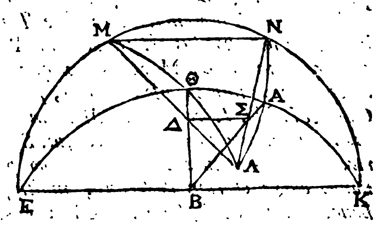

Proposition III.1 — The Spherical Menelaus Transversal Theorem¶
Menelai Alexandrini Sphaericorum Lib. III Prop. I. Theor. (Halley 1758, pp. 80–82)

Proposition III.1 — Theorem: Theorema Menelai / Figura Catha (pp. 80–82)¶
Enunciation (Halley 1758, p. 80)
Let there be upon the surface of a sphere two arcs of great circles \(\mathrm{NME}\), \(\mathrm{NA\Lambda}\), between which let two other great-circle arcs \(\mathrm{E\Theta A}\), \(\mathrm{\Lambda\Theta M}\) be drawn meeting one another at point \(\mathrm{\Theta}\): I say that the sine of arc \(\widehat{\mathrm{AN}}\) has to the sine of arc \(\widehat{\mathrm{A\Lambda}}\) a ratio compounded of the ratio which the sine of arc \(\widehat{\mathrm{NE}}\) has to the sine of arc \(\widehat{\mathrm{EM}}\), and of the ratio which the sine of arc \(\widehat{\mathrm{M\Theta}}\) has to the sine of arc \(\widehat{\mathrm{\Theta\Lambda}}\).
On the unit sphere S², great-circle transversal DF cuts the sides of spherical triangle A, B, C (AB, BC, CA) at D (external on BC), E, and F, satisfying:
[§3.1 · Menelaus’s Gnomonic-Chord Demonstration, Halley pp. 80–82] Let point \(\mathrm{B}\) be set as the center of the sphere, and join straight lines (chords and radii) \(\mathrm{\Lambda N}\), \(\mathrm{\Lambda M}\), \(\mathrm{MN}\), \(\mathrm{EB}\), and \(\mathrm{\Theta B}\) meeting chord \(\mathrm{M\Lambda}\) at \(\mathrm{\Delta}\), and radius \(\mathrm{AB}\) meeting chord \(\mathrm{N\Lambda}\) at \(\mathrm{\Sigma}\); and let straight line \(\mathrm{\Delta\Sigma}\) be drawn and produced until it meets straight line \(\mathrm{MN}\) produced at \(\mathrm{K}\):
Point \(\mathrm{K}\) lies in the plane of both great circles \(\mathrm{A\Theta E}\) and \(\mathrm{NME}\). Since points \(\mathrm{E}\) and \(\mathrm{B}\) also lie in both planes, \(\mathrm{KEB}\) is a single straight line (Euclid Elements XI.3).
In the planar triangle \(\triangle \mathrm{N\Lambda M}\), point \(\mathrm{\Sigma}\) lies on \(\mathrm{N\Lambda}\), point \(\mathrm{\Delta}\) lies on \(\mathrm{M\Lambda}\), and point \(\mathrm{K}\) lies on \(\mathrm{MN}\) produced, with \(\mathrm{\Sigma}, \mathrm{\Delta}, \mathrm{K}\) collinear. Therefore, by the Planar Menelaus Lemma (per sequens Lemma I), the ratio \(\mathrm{N\Sigma} : \mathrm{\Sigma\Lambda}\) is compounded of \(\mathrm{NK} : \mathrm{KM}\) and \(\mathrm{M\Delta} : \mathrm{\Delta\Lambda}\).
By the Chord-Sine Lemma (per Lemma II), \(\mathrm{NK} : \mathrm{KM}\) equals the perpendicular dropped from \(\mathrm{N}\) onto diameter \(\mathrm{KEB}\) to the perpendicular from \(\mathrm{M}\) onto the same diameter—that is, \(\sin \widehat{\mathrm{NE}} : \sin \widehat{\mathrm{EM}}\). Likewise \(\mathrm{N\Sigma} : \mathrm{\Sigma\Lambda} = \sin \widehat{\mathrm{NA}} : \sin \widehat{\mathrm{A\Lambda}}\), and \(\mathrm{M\Delta} : \mathrm{\Delta\Lambda} = \sin \widehat{\mathrm{M\Theta}} : \sin \widehat{\mathrm{\Theta\Lambda}}\).
Hence \(\sin \widehat{\mathrm{AN}} : \sin \widehat{\mathrm{A\Lambda}}\) is compounded of \(\sin \widehat{\mathrm{NE}} : \sin \widehat{\mathrm{EM}}\) and \(\sin \widehat{\mathrm{M\Theta}} : \sin \widehat{\mathrm{\Theta\Lambda}}\). Q.E.D.
[§3.2 · Limiting Parallel Case & Alternation, pp. 81–82]
f. 0097 · p. 81

Now if straight line \(\mathrm{\Delta\Sigma}\) be parallel to straight line \(\mathrm{MN}\): then the common diameter \(\mathrm{EB}\) will be parallel to both straight lines \(\mathrm{\Delta\Sigma}, \mathrm{MN}\) (by Euclid Elements XI.9); hence the perpendiculars from \(\mathrm{N}\) and \(\mathrm{M}\) onto diameter \(\mathrm{EB}\) are equal (\(\sin \widehat{\mathrm{NE}} = \sin \widehat{\mathrm{EM}}\), since \(\widehat{\mathrm{EM}} + \widehat{\mathrm{NE}}\) equals a semicircle), and \(\sin \widehat{\mathrm{NA}} : \sin \widehat{\mathrm{A\Lambda}} = \sin \widehat{\mathrm{M\Theta}} : \sin \widehat{\mathrm{\Theta\Lambda}}\). Inverting the compounded ratio yields the companion katà diaíresin identity: